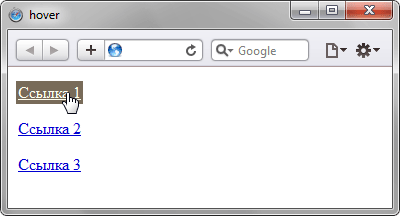
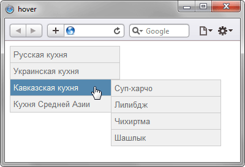

Псевдокласс :hover
Определяет стиль элемента при наведении на него курсора мыши, но при этом элемент еще не активирован, иными словами кнопка мыши не нажата.
Синтаксис
Селектор:hover { ... }Пример
<!DOCTYPE html>
<html>
<head>
<meta charset="utf-8" />
<title>hover</title>
<style>
a:link {
color: #0000d0; /* Цвет ссылок */
padding: 2px; /* Поля вокруг текста */
}
a:hover {
background: #786b59; /* Цвет фона под ссылкой */
color: #ffe; /* Цвет ссылки */
}
</style>
</head>
<body>
<p><a href="1.html">Ссылка 1</a></p>
<p><a href="2.html">Ссылка 2</a></p>
<p><a href="3.html">Ссылка 3</a></p>
</body>
</html>В данном примере псевдокласс :hover применяется к ссылке (тегу <a>), при этом меняется цвет ссылки и фона под ней. Результат примера показан на рис. 1.

Рис. 1. Результат использования псевдокласса :hover для ссылок
<!DOCTYPE html>
<html>
<head>
<meta charset="utf-8">
<title>hover</title>
<style>
ul {
width: 180px; /* Ширина меню */
list-style: none; /* Для списка убираем маркеры */
margin: 0; /* Нет отступов вокруг */
padding: 0; /* Убираем поля вокруг текста */
font-family: Arial, sans-serif; /* Рубленый шрифт для текста меню */
font-size: 10pt; /* Размер названий в пункте меню */
}
li ul {
position: absolute; /* Подменю позиционируются абсолютно */
display: none; /* Скрываем подменю */
margin-left: 165px; /* Сдвигаем подменю вправо */
margin-top: -2em; /* Сдвигаем подменю вверх */
}
li a {
display: block; /* Ссылка как блочный элемент */
padding: 5px; /* Поля вокруг надписи */
text-decoration: none; /* Подчеркивание у ссылок убираем */
color: #666; /* Цвет текста */
border: 1px solid #ccc;/* Рамка вокруг пунктов меню */
background-color: #f0f0f0; /* Цвет фона */
border-bottom: none; /* Границу снизу не проводим */
}
li a:hover {
color: #ffe; /* Цвет текста активного пункта */
background-color: #5488af; /* Цвет фона активного пункта */
}
li:hover ul {
display: block; /* При выделении пункта курсором мыши отображается подменю */
}
.brd {
border-bottom: 1px solid #ccc; /* Линия снизу */
}
</style>
</head>
<body>
<ul class="menu">
<li><a href="russian.html">Русская кухня</a>
<ul>
<li><a href="linkr1.html">Бефстроганов</a></li>
<li><a href="linkr2.html">Гусь с яблоками</a></li>
<li><a href="linkr3.html">Крупеник новгородский</a></li>
<li><a href="linkr4.html" class="brd">Раки по-русски</a></li>
</ul>
</li>
<li><a href="ukrainian.html">Украинская кухня</a>
<ul>
<li><a href="linku1.html">Вареники</a></li>
<li><a href="linku2.html">Жаркое по-харьковски</a></li>
<li><a href="linku3.html">Капустняк черниговский</a></li>
<li><a href="linku4.html" class="brd">Потапцы с помидорами</a></li>
</ul>
</li>
<li><a href="caucasus.html">Кавказская кухня</a>
<ul>
<li><a href="linkc1.html">Суп-харчо</a></li>
<li><a href="linkc2.html">Лилибдж</a></li>
<li><a href="linkc3.html">Чихиртма</a></li>
<li><a href="linkc4.html" class="brd">Шашлык</a></li>
</ul>
</li>
<li><a href="asia.html" class="brd">Кухня Средней Азии</a></li>
</ul>
</body>
</html>В данном примере псевдокласс :hover добавляется к элементу списка (тег <li>) для создания двухуровневого меню. Результат примера показан на рис. 2.

Рис. 2. Использование :hover для создания меню
Примечание
В браузере Internet Explorer до версии 7.0 псевдокласс :hover работает только для ссылок.
Спецификация
| Спецификация | Статус |
|---|---|
| Selectors Level 4 | Рабочий проект |
| Selectors Level 3 | Рекомендация |
| CSS Level 2 (Revision 1) | Рекомендация |
Браузеры
| Internet Explorer | Chrome | Opera | Safari | Firefox | |
| 4 | 7 | 1 | 4 | 2 | 1 |
| Android | Firefox Mobile | Opera Mobile | Safari Mobile |
| 1 | 1 | 6 | 1 |